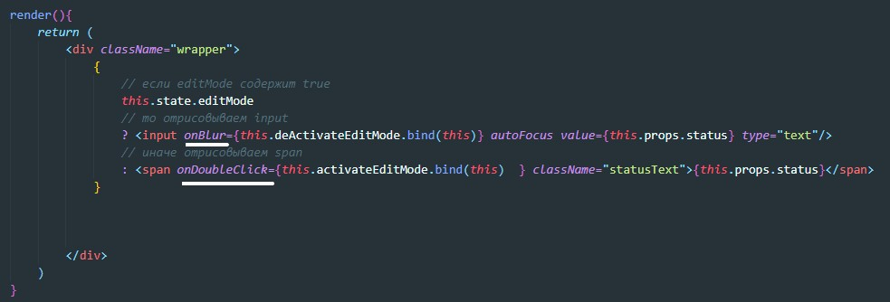

В проекте могут быть случаи когда что бы изменить UI будет не целесообразно дергать весь state. В таких случаях можно использовать локальный state, а не общий (глобальный). Здесь нужно отметить что локальный state могут использовать только классовые компоненты, так как изменение такого state должен сопровождать перерендер, а метод рендера после изменения state наследуется от React.Component
Допустим что у нас на странице профиля есть статус. По сути это просто span с текстом статуса. При двойном клике мы будем заменять span на поле input. За отображение span или input будет отвечать свойство - editMode
Теперь создадим локальный state. По сути это обычный объект
Теперь необходимо создать два метода которые будут менять editMode на true и false
Метод setState наследован от конструктора React.Component. В качестве аргемента мы передаем объект со свойством которое надо поменять в локальном стейте и его значение. Вторым аргументом setState принимает callBack функцию, которая будет вызвана после перерендера
Все что нам осталось это создать обработчики событии на элементах верстки и вызвать наши методы
Почему мы здесь используем bind? Потому что при вызове по клику или потере фокуса контекст вызова будет передан на элемент верстки. Поэтому надо захаркодить контекст
Метод setState помимо объекта c локальным state может принять функцию. Этой функции в качестве аргумента setState передаст локальный state и выполнит эту функцию.